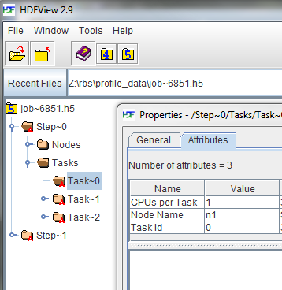
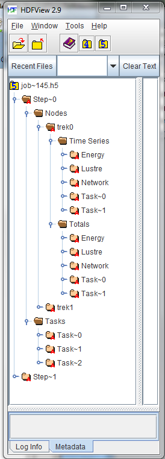

Profiling Using HDF5 User Guide
Contents
Overview
The acct_gather_profile/hdf5 plugin allows Slurm to coordinate collecting data on jobs it runs on a cluster that is more detailed than is practical to include in its database. The data comes from periodically sampling various performance data either collected by Slurm, the operating system, or component software. The plugin will record the data from each source as a Time Series and also accumulate totals for each statistic for the job.
Time Series are energy data collected by an acct_gather_energy plugin, I/O data from a network interface collected by an acct_gather_interconnect plugin, I/O data from parallel file systems such as Lustre collected by an acct_gather_filesystem plugin, and task performance data such as local disk I/O, cpu consumption, and memory use from a jobacct_gather plugin. Data from other sources may be added in the future.
The data is collected into a file on a shared file system for each step on each allocated node of a job and then merged into an HDF5 file. Individual files on a shared file system was chosen because it is possible that the data is voluminous so solutions that pass data to the Slurm control daemon via RPC may not scale to very large clusters or jobs with many allocated nodes.
Administration
Shared File System
The HDF5 Profile Plugin requires a common shared file system on all the compute nodes. While a job is running, the plugin writes a file into this file system for each step of the job on each node. When the job ends, the merge process is launched and the node-step files are combined into one HDF5 file for the job.
The root of the directory structure is declared in the ProfileHDF5Dir option in the acct_gather.conf file. The directory will be created by Slurm if it doesn't exist. Each user will have their own directory created in the ProfileHDF5Dir which contains the HDF5 files. All the directories and files are created by the SlurmdUser which is usually root. The user specific directories, as well as the files inside, are chowned to the user running the job so they can access the files. Since user root is usually creating these files/directories a root squashed file system will not work for the ProfileHDF5Dir.
Each user that creates a profile will have a subdirectory in the profile directory that has read/write permission only for the user.
Configuration parameters
The profile plugin is enabled in the slurm.conf file and it is internally configured in the acct_gather.conf file.
slurm.conf parameters
- AcctGatherProfileType=acct_gather_profile/hdf5
- Enables the HDF5 plugin.
- JobAcctGatherFrequency=<seconds>
- Sets the sampling frequency for data types.
acct_gather.conf parameters
These parameters are directly used by the HDF5 Profile Plugin.
- ProfileHDF5Dir=<path>
- This parameter is the path to the shared folder into which the acct_gather_profile plugin will write detailed data as an HDF5 file. The directory is assumed to be on a file system shared by the controller and all compute nodes. This is a required parameter.
- ProfileHDF5Default=[options]
- A comma-delimited list of data types to be collected for each job submission. Use this option with caution. A node-step file will be created on every node for every step of every job. They will not automatically be merged into job files. (Even job files for large numbers of small jobs would fill the file system.) This option is intended for test environments where you might want to profile a series of jobs but do not want to have to add the --profile option to the launch scripts. The options are described below and in the man pages for acct_gather.conf, srun, salloc and sbatch commands.
Time Series Control Parameters
Other plugins add time series data to the HDF5 collection. They typically have a default polling frequency specified in slurm.conf in the JobAcctGatherFrequency parameter. The polling frequency can be overridden using the --acctg-freq srun parameter. They are both of the form task=sec,energy=sec,filesystem=sec,network=sec.
The IPMI energy plugin also needs the EnergyIPMIFrequency value set in the acct_gather.conf file. This sets the rate at which the plugin samples the external sensors. This value should be the same as the energy=sec in either JobAcctGatherFrequency or --acctg-freq.
Note that the IPMI and profile sampling are not synchronous. The profile sample simply takes the last available IPMI sample value. If the profile energy sample is more frequent than the IPMI sample rate, the IPMI value will be repeated. If the profile energy sample is greater than the IPMI rate, IPMI values will be lost.
Also note that smallest effective IPMI (EnergyIPMIFrequency) sample rate for 2013 era Intel processors is 3 seconds.
Profiling Jobs
Data Collection
The --profile option on salloc|sbatch|srun controls whether data is collected and what type of data is collected. If --profile is not specified no data collected unless the ProfileHDF5Default option is used in acct_gather.conf. --profile on the command line overrides any value specified in the configuration file.
- --profile=<all|none|[energy[,|task[,|filesystem[,|network]]]]>
- Enables detailed data collection by the acct_gather_profile plugin. Detailed data are typically time-series that are stored in a HDF5 file for the job.
-
- All
- All data types are collected. (Cannot be combined with other values.)
- None
- No data types are collected. This is the default. (Cannot be combined with other values.)
- Energy
- Energy data is collected.
- Filesystem
- Filesystem data is collected. Currently only Lustre filesystem is supported.
- Network
- Network (InfiniBand) data is collected.
- Task
- Task (I/O, Memory, ...) data is collected.
Data Consolidation
The node-step files are merged into one HDF5 file for the job using the sh5util.
If the job is started with sbatch, the command line may added to the normal launch script, For example:
sbatch -n1 -d$SLURM_JOB_ID --wrap="sh5util -j $SLURM_JOB_ID"
Data Extraction
The sh5util program can also be used to extract specific data from the HDF5 file and write it in comma separated value (csv) form for importation into other analysis tools such as spreadsheets.
HDF5
HDF5 is a well known structured data set that allows heterogeneous but related data to be stored in one file. (.i.e. sections for energy statistics, network I/O, Task data, etc.) Its internal structure resembles a file system with groups being similar to directories and data sets being similar to files. It also allows attributes to be attached to groups to store application defined properties.
There are commodity programs, notably HDFView, for viewing and manipulating these files.
Below is a screen shot from HDFView expanding the job tree and showing the attributes for a specific task.

Data Structure
 |
In the job file, there will be a group for each step of the job. Within each step, there will be a group for nodes, and a group for tasks.
|
Energy Data
AcctGatherEnergyType=acct_gather_energy/ipmi
is required in slurm.conf to collect energy data. Appropriately set energy=freq in either JobAcctGatherFrequency in slurm.conf or in --acctg-freq on the command line. Also appropriately set EnergyIPMIFrequency in acct_gather.conf.
Each data sample in the Energy Time Series contains the following data items.
- Date Time
- Time of day at which the data sample was taken. This can be used to correlate activity with other sources such as logs.
- Time
- Elapsed time since the beginning of the step.
- Power
- Power consumption during the interval.
- CPU Frequency
- CPU Frequency at time of sample in kilohertz.
Filesystem Data
AcctGatherFilesystemType=acct_gather_filesystem/lustre
is required in slurm.conf to collect task data. Appropriately set Filesystem=freq in either JobAcctGatherFrequency in slurm.conf or in --acctg-freq on the command line.
Each data sample in the Filesystem Time Series contains the following data items.
- Date Time
- Time of day at which the data sample was taken. This can be used to correlate activity with other sources such as logs.
- Time
- Elapsed time since the beginning of the step.
- Reads
- Number of read operations.
- Megabytes Read
- Number of megabytes read.
- Writes
- Number of write operations.
- Megabytes Write
- Number of megabytes written.
Network (Infiniband Data)
AcctGatherInterconnectType=acct_gather_interconnect/ofed
is required in slurm.conf to collect task data. Appropriately set network=freq in either JobAcctGatherFrequency in slurm.conf or in --acctg-freq on the command line.
Each data sample in the Network Time Series contains the following data items.
- Date Time
- Time of day at which the data sample was taken. This can be used to correlate activity with other sources such as logs.
- Time
- Elapsed time since the beginning of the step.
- Packets In
- Number of packets coming in.
- Megabytes Read
- Number of megabytes coming in through the interface.
- Packets Out
- Number of packets going out.
- Megabytes Write
- Number of megabytes going out through the interface.
Task Data
JobAcctGatherType=jobacct_gather/linux
is required in slurm.conf to collect task data. Appropriately set task=freq in either JobAcctGatherFrequency in slurm.conf or in --acctg-freq on the command line.
Each data sample in the Task Time Series contains the following data items.
- Date Time
- Time of day at which the data sample was taken. This can be used to correlate activity with other sources such as logs.
- Time
- Elapsed time since the beginning of the step.
- CPU Frequency
- CPU Frequency at time of sample.
- CPU Time
- Seconds of CPU time used during the sample.
- CPU Utilization
- CPU Utilization during the interval.
- RSS
- Value of RSS at time of sample.
- VM Size
- Value of VM Size at time of sample.
- Pages
- Pages used in sample.
- Read Megabytes
- Number of megabytes read from local disk.
- Write Megabytes
- Number of megabytes written to local disk.
Last modified 17 October 2022